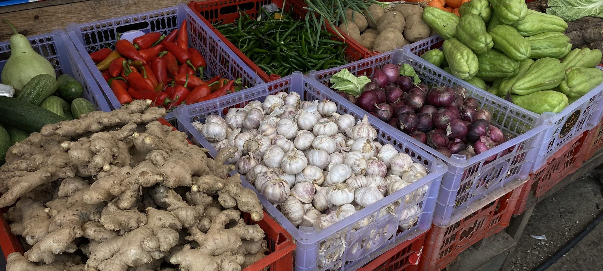

Quelle est la meilleure enseigne bio en 2026 ? Le comparatif de 8 enseignes
Panier relevé chez 8 enseignes, gammes comptées, avis lus. Une enseigne sort du lot.

Panier de 20 produits relevé en rayon, gammes comptées, vrac mesuré, avis Google lus. Nous classons les enseignes sur les mêmes critères.

Panier relevé chez 8 enseignes, gammes comptées, avis lus. Une enseigne sort du lot.

Le même panier commandé sur les deux sites, frais et délais relevés.
Note globale sur 10 sur les seuls magasins physiques. Le prix du panier et la largeur de gamme pèsent le plus.
Voir la méthode de notation


Comparez deux enseignes sur nos cinq critères en un clic.
Sur nos relevés de septembre 2026, Biocoop obtient la meilleure note globale (8,3/10) grâce à la gamme la plus large et au vrac présent dans tous les magasins. Naturalia suit à 7,6.
Carrefour Bio affiche le panier de 20 produits le plus bas en ville (54 €), Biocoop se place à 61 € et Naturalia à 68 €.
Biocoop propose du vrac dans 100 % de ses magasins avec en moyenne 180 références, contre 90 chez La Vie Claire et 40 chez Naturalia.
Cinq critères sur 10, prix du panier, largeur de gamme, proximité, avis clients et note globale pondérée. Les prix sont relevés en rayon hors promotion.
Pour les fruits et légumes de saison, souvent oui sur le prix. Pour l'épicerie, le frais et les cosmétiques, une enseigne garde l'avantage de la gamme.
Un email par semaine avec le classement du mois, les nouveaux comparatifs et les baisses de prix relevées en rayon.
Pas de publicité, désinscription en un clic.